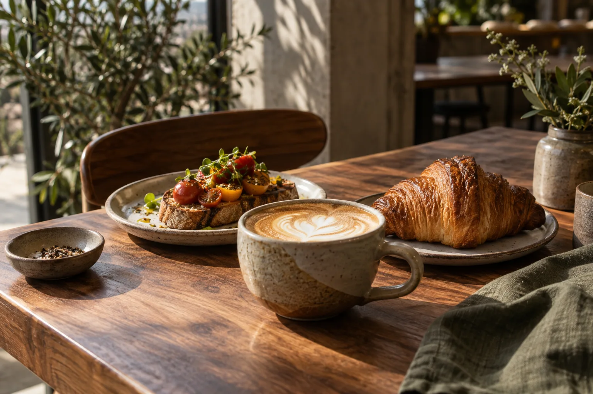

Tomato & burrata toast
Roasted tomatoes, basil oil, toasted sourdough.
Beautiful coffee, generous plates and a warm corner of the neighbourhood. Make yourself at home.
Fictional concept by ZionFlow · Explore the demo

The best places make ordinary days feel a little special. We imagine a place for unhurried breakfasts, quick coffee stops and conversations that run past lunch.
Breakfast with a friend, a leisurely lunch, or just because. Explore the table request experience.
Demo only: no table is reserved. Details stay in this tab unless you download a copy. Use sample details.
JOHANNESBURG CONCEPT
Monday–Saturday · 07:00–16:00
Sunday · 08:00–14:00
Illustrative hours; no real venue at this address.